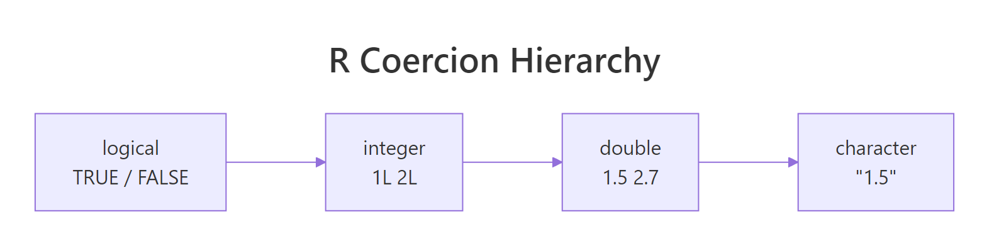
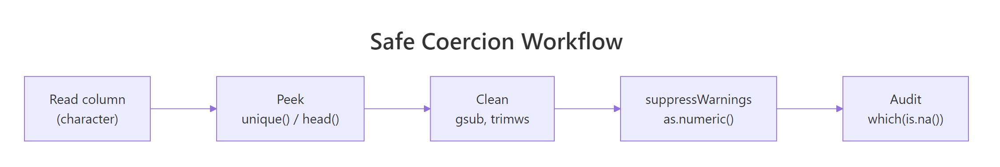

R Type Coercion: Why Your Numeric Columns Silently Turn Into Characters
R constantly converts values between types behind your back — logical becomes integer, integer becomes double, anything becomes character. The rule it follows is a one-way ladder, and the moment a stray string sneaks into a numeric vector, the whole column becomes character and your arithmetic silently fails.
This post explains the coercion hierarchy, the two flavours of conversion (implicit vs explicit), the famous "NAs introduced by coercion" warning, and the five-step workflow for converting character columns to numeric safely.
Why do R's types silently change on you?
R has no row-by-row type — it has vector types. Every atomic vector is one type, top to bottom, which means the moment you mix types inside a c() call or read a CSV with one stray letter in an otherwise-numeric column, R has to pick one type for the whole vector. It resolves the conflict with a fixed hierarchy, always upgrading to the more general type. The ladder looks like this: logical → integer → double → character.
Here is the hierarchy in action. Watch the class() output change each time we mix in a "bigger" type.
The last two examples are where real bugs live. The moment a single "x" lands in the vector, every number is stringified: "1", "2.5", "TRUE". And sum() on a logical vector is a hidden, useful coercion — it's how you count TRUEs without ever thinking of it as type conversion. R's rule is simple: when types disagree, climb the ladder until one type fits everyone.
Try it: Build a vector ex_mix that contains FALSE, 3L, and 1.4 — predict the class before running, then verify with class() and typeof().
Click to reveal solution
Explanation: Logical + integer + double climbs the ladder to double. class() reports "numeric" (a friendly umbrella); typeof() reports the underlying "double".
What is R's coercion hierarchy, exactly?
Four base atomic types, one strict ordering. logical sits at the bottom because it has only two values; character sits at the top because any value can be written as text. R always moves up the ladder, never down, so the presence of a single higher-type value "upgrades" the whole vector.

Figure 1: R always coerces upward. A single character in the mix pulls the entire vector to character — which is why one typo in a CSV column can ruin your arithmetic.
| From → To | How it converts | Example |
|---|---|---|
| logical → integer | FALSE→0L, TRUE→1L |
as.integer(TRUE) → 1L |
| integer → double | exact, same value | as.double(5L) → 5 |
| double → character | formatted via format() |
as.character(3.14) → "3.14" |
| double → integer | truncation, not rounding | as.integer(2.9) → 2L |
| character → numeric | parses digits; non-numeric → NA + warning |
as.numeric("2.5") → 2.5 |
The row that causes the most accidental data loss is double → integer: as.integer(2.9) is 2, not 3. If you wanted rounding, use round() explicitly. The row that causes the most silent data corruption is character → numeric, which we'll attack next.
as.integer() truncates — it drops the decimal part. That's the same as trunc(), and it surprises almost everyone coming from Python or Excel. Whenever you want a genuine rounded integer, use round() (or ceiling() / floor() if direction matters) and then coerce.
class(1L) and class(1.5) both say "numeric", which hides whether you're working with integers or doubles. typeof() returns "integer" vs "double" so you can spot subtle issues like integer overflow or unexpected divisions.Try it: You have x <- c(1.2, 3.7, 5.1). Write one line that produces the rounded integer vector c(1L, 4L, 5L) — not the truncated version.
Click to reveal solution
Explanation: round() gives you doubles with no fractional part. as.integer() then drops the (zero) decimal cleanly and returns an integer vector.
Why does 'NAs introduced by coercion' appear — and how do you fix it?
You'll meet this warning the first time you read a CSV where one cell has a stray dollar sign or a footnote marker. as.numeric() happily converts "1.5" to 1.5 but collapses "N/A", "—", or "$42.00" to NA and prints a warning. The warning is your friend — it's telling you a column you thought was numeric has dirty values you need to handle on purpose.
Four values failed to parse — the "N/A" text, the dollar sign, the empty string, and the comma-thousand separator. "3.14" survived. In a 10,000-row column you'd never spot this by eye, which is why the fix is not to silence the warning but to clean first, then convert.
Here is the workflow in code: peek at the offenders, clean them, then coerce.
Four clean numbers, two deliberate NAs for the "N/A" and the empty cell, and no silent data loss. suppressWarnings() is appropriate only after you've cleaned the known offenders — never as the first thing you reach for.

Figure 2: The four-step workflow that turns a "dirty" character column into a trustworthy numeric vector without hiding bugs.
sum(is.na(result)) afterwards to catch the last stragglers.Try it: You receive ex_raw <- c(" 12", "15kg", "20", "n/a"). Produce a numeric vector where only "15kg" and "n/a" become NA — "12" and "20" should come through clean.
Click to reveal solution
Explanation: trimws() fixes the leading space, the explicit NA substitution handles the sentinel, and suppressWarnings(as.numeric(...)) is safe now because the only remaining failure ("15kg") is genuinely non-numeric and you've accepted that.
How do implicit and explicit coercion differ in R?
Every coercion in R is one of two flavours. Implicit coercion happens automatically when an operation needs values of compatible types — for example, 1 + TRUE works because R quietly promotes TRUE to 1. Explicit coercion is when you call a conversion function like as.numeric(), as.character(), as.integer() yourself.
You need both, but the rule of thumb is: prefer explicit when the stakes are high. Implicit coercion is convenient in interactive work (sum(my_logical) to count TRUEs), but in production code it hides intent and can paper over bugs. Explicit coercion documents what you meant to do and makes failures loud.
The mean() example is lovely: it silently promotes logical to integer and returns the proportion of TRUE values — often exactly what you want. The NA + TRUE example is the dark side: implicit promotion combined with NA propagation silently produces NA instead of throwing an error, and the bug only surfaces downstream.
as.numeric() on a Date returns days since 1970-01-01; on a POSIXct it returns seconds. Neither is a bug — they're documented — but they catch people out. If you mean "parse this string as a date", use as.Date() or lubridate, not as.numeric().Try it: Given ex_v <- c(TRUE, FALSE, TRUE, NA, TRUE), count how many TRUEs it has without letting the NA ruin the answer.
Click to reveal solution
Explanation: sum() implicitly coerces logical to integer (TRUE→1, FALSE→0, NA→NA). na.rm = TRUE drops the NA before summing, leaving a clean count of TRUE values.
What are the most common R coercion bugs?
Five patterns trip up almost every R user at some point. Each one is a silent failure: R does exactly what it was designed to do, the output looks plausible, and the answer is wrong.
Bug 4 is the subtlest and the cause of some spectacular production incidents. factor(c("10","20","30")) stores the levels as a character lookup and each row as a small integer pointing into that lookup. as.integer(f) returns those integer positions (1, 2, 3) — not the numeric values the strings represent. The fix is as.numeric(as.character(f)): first back to characters, then to numbers.
as.numeric(factor) silently returns the level codes, not the underlying numbers. Always write as.numeric(as.character(f)), or better, fix the read step so the column never becomes a factor to begin with (read.csv(..., stringsAsFactors = FALSE) — now the default in R 4.0+).Try it: You have f <- factor(c("100", "200", "300")). Extract the numeric vector c(100, 200, 300) from it.
Click to reveal solution
Explanation: as.character(f) rebuilds the strings "100", "200", "300". as.numeric() then parses them to doubles. Skipping the as.character() step would have returned 1, 2, 3 — the internal level codes.
Practice Exercises
Two capstone exercises that combine the patterns above. Use distinct variable names (my_*) so your solutions don't overwrite tutorial values.
Exercise 1: Clean a messy price column
Given my_prices <- c("$1,200", "$950", "free", "$75.50", "N/A", " $300 "), produce my_parsed — a numeric vector where only "free" and "N/A" become NA. Print sum(my_parsed, na.rm = TRUE) to verify it equals 2525.50.
Click to reveal solution
Explanation: Four cleaning steps in order: strip symbols, trim whitespace, blank out sentinel values, then coerce. suppressWarnings() is safe because you know exactly which values you're dropping.
Exercise 2: Safe factor round-trip
Given my_fac <- factor(c("2021", "2020", "2019", "2020", "2021")), write one line that returns the mean of the underlying years (2020.2). Your solution must work even if the factor is reordered internally.
Click to reveal solution
Explanation: as.character(my_fac) rebuilds the real year strings, and as.numeric() turns them into doubles. The factor's internal ordering is irrelevant because you're going through the character labels, not the level codes.
Complete Example
Here is an end-to-end flow that mimics reading a real CSV export: messy numeric columns mixed with dates, currency, and a categorical. We'll clean each column with the right coercion and end up with a trustworthy data frame.
Every column is now exactly the type you want: Date for the date, num for the amount, int for the quantity, chr for the region. The final sum(...) silently drops rows with NA thanks to na.rm = TRUE, and the answer (5561.5) is trustworthy because you know where the NAs came from.
Summary
| Rule | What it means | When to apply |
|---|---|---|
| The ladder goes up | logical → integer → double → character | Predict c(...)'s type by the highest member |
| as.integer truncates | 2.9 → 2, not 3 |
Wrap in round() when you want rounding |
| Clean before converting | Strip $, ,, trim whitespace |
Always, on any external data |
| Audit with which(is.na()) | Count and locate failures | After every as.numeric() call |
| Factor → numeric is two-step | as.numeric(as.character(f)) |
Any time you need numeric values from a factor |
| Prefer explicit in scripts | Call as.numeric() / as.character() by hand |
Production code, shared pipelines |
NA. Treat every instance as a signal to investigate which values failed — never as noise to suppress first and ask questions later.References
- Wickham, H. Advanced R (2nd ed.), Chapter 3: Vectors. adv-r.hadley.nz/vectors-chap.html
- R Core Team. An Introduction to R, §3.1 Vector arithmetic. cran.r-project.org/doc/manuals/r-release/R-intro.html
- R documentation:
?as.numeric,?as.integer,?as.character,?as.logical,?warnings. - R-bloggers. NAs Introduced by Coercion. (2022). r-bloggers.com/2022/02/nas-introduced-by-coercion
- Statology. How to Fix in R: NAs Introduced by Coercion. statology.org/nas-introduced-by-coercion-in-r
- Peng, R. R Programming for Data Science, Chapter 8: Managing Data Frames. bookdown.org/rdpeng/rprogdatascience
- R news item: R 4.0.0 stringsAsFactors default changed to FALSE. stat.ethz.ch/pipermail/r-announce/2020/000653.html
Continue Learning
- R Data Types: Which Type Is Your Variable? — The parent post on R's four atomic types and when each one applies.
- R's Four Special Values: NA, NULL, NaN, Inf — The oddballs that often appear right next to coercion bugs.
- R Vectors: The Foundation of Everything in R — Vectors are where coercion happens; the vector chapter makes the ladder click.